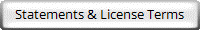

Latest Release
Windows Vista x64 and later
License: CPAL 1.0

Explore More
(Platforms & Versions)
浏览器不支持嵌入式框架，或被配置为不显示嵌入式框架。
Learning & Documentation
Find guides, tutorials, and documentation for using Phytozome-Go on Windows.
Contact & Contribute
Get in touch with the developer, submit feature requests, report bugs, or contribute code through GitHub.
Free Software, Free Society! (The GNU Manifesto)
© 2026 Wang Shuyang (KiriKirby). All Rights Reserved.